Sample Analysis
This is some preliminary analysis I did for an experiment we’re doing to quantify the effects of crop priming on nitrogen fixation rates. You can see the latest version of this analysis at my research journal and learn more about the experiment at my website. Also note that you can view the source code of this page by click on the Code button to the right of the title of this page.
Data
Reading in the data
data.priming <- read.csv("data/priming_amoA_deltaCt.csv", header = T) %>%
rename(sample_id = X)
data.raw <- read.csv("data/priming_amoA_rawCt.csv", header = T) %>%
rename(sample_id = X)
data.priming.long <- data.priming %>%
pivot_longer(cols = starts_with("amoA"), names_to = "amoA", values_to = "deltaCT")
data.raw.long <- data.raw %>%
pivot_longer(cols = starts_with("amoA"), names_to = "amoA", values_to = "CT")
data.priming.long$sample_id <- fct_reorder(data.priming.long$sample_id, parse_number(data.priming.long$sample_id))
df <- data.priming[, -1]
rownames(df) <- data.priming[, 1]
metadata <- df %>%
select(fert_level:field_rep) %>%
mutate(across(everything(), as.factor))
amoa_counts <- df %>%
select(starts_with("amoA"))data.priming contains the data for our experiment. There are rows for samples, columns for the delta CTs of the different amoAs, and some metadata.
data.priming[1:5, 1:5] sample_id amoA.001 amoA.002 amoA.003 amoA.004
1 2b 10.119249 27.41268 8.764504 8.992937
2 35b 9.837943 27.51089 9.300077 10.445448
3 52f 26.345485 26.34548 26.345485 26.345485
4 34f 26.914432 26.91443 26.914432 26.914432
5 16f 8.337293 25.94591 8.371314 25.945907data.raw contains the same columns but lists the raw CT values instead of the 16s-normalized ones.
data.raw[1:5, 1:5] sample_id amoA.001 amoA.002 amoA.003 amoA.004
1 2b 22.70657 40 21.35182 21.58026
2 35b 22.32706 40 21.78919 22.93456
3 52f 40.00000 40 40.00000 40.00000
4 34f 40.00000 40 40.00000 40.00000
5 16f 22.39139 40 22.42541 40.00000THe long versions of these dataframes contains the same info but in long format to play nicely with ggplot.
Removing amoAs
We’ll start by removing those amoAs from our data that are not present in over 30 samples across both treatments.
We’ll first start by counting the non-detects for each amoA.
non_detect_counts <- data.raw.long %>%
group_by(fert_level, amoA) %>%
count(CT == 40) %>%
rename(non_detect = `CT == 40`) %>%
filter(non_detect == TRUE)Finding the amoAs that are not detected in > 30 across both samples
removes <- non_detect_counts %>%
pivot_wider(names_from = fert_level, values_from = n, names_prefix = "fert.") %>%
filter(fert.0 > 30 & fert.336 > 30) %>%
pivot_longer(cols = fert.0:fert.336, names_to = "fert_level", values_to = "n")We’ll now reduce data.priming by removing those amoAs that are largely non-detects. We’ll also update the long version while we’re at it
data.priming.reduced <- data.priming %>%
select(-one_of(removes$amoA))
data.priming.reduced.long <- data.priming.reduced %>%
select(-sample_id, field_rep) %>%
pivot_longer(cols = contains("amoa")) Here’s a barchart of what we’re removing:
Code
removes %>%
mutate(amoA = str_sub(amoA, -3)) %>%
mutate(favored = case_when(
amoA %in% c("006", "038", "064", "069", "071") ~ "Nothing",
amoA %in% c("021", "028", "030", "048", "073", "075", "076", "077", "078") ~ "Non-fertilized",
amoA %in% c("040", "050", "053") ~ "Fourth quadrant",
TRUE ~ "First quadrant"
)) %>%
mutate(fert_level = str_sub(fert_level, start = 6)) %>%
ggplot(aes(amoA, n, fill = favored )) +
geom_col() +
facet_wrap(~ fert_level) +
theme(
plot.title = element_text(hjust = 0.5),
legend.text = element_markdown(size = 12),
legend.title = element_markdown(size = 12, hjust = 0),
strip.background = element_rect(size = 1, color = "black", fill = "NA"),
panel.grid = element_line(color = "gray95"),
panel.grid.major.y = element_blank(),
panel.grid.minor.y = element_blank(),
panel.grid.minor.x = element_blank(),
panel.border = element_rect(color = "black", size = 1, fill = NA)
) +
scale_fill_viridis_d(begin = 0, end = 0.5) +
scale_y_continuous(limits = c(0, 50), expand = expansion(add = c(0, 0))) +
scale_x_discrete(limits = rev) +
coord_flip() +
labs(
y = "Number of samples with > 30 non-detects",
title = "Fertilizer level",
fill = "Favored by..."
)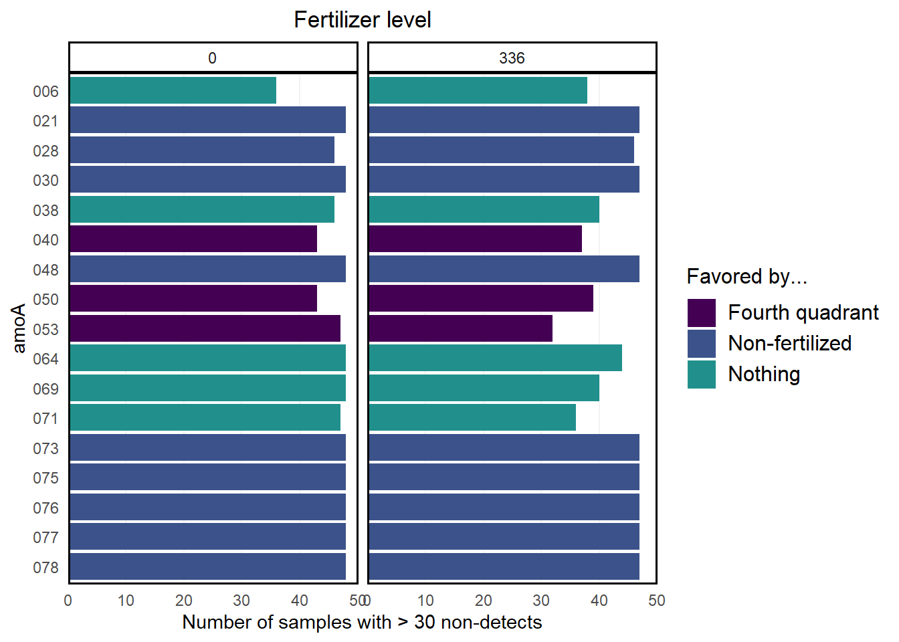
Note that most of the non-detects that we’re removing are from the non-fertilized group.
Next, we’ll convert the CT values to presence/absence for use in later analysis.
amoA_presence_absence <- data.raw %>%
select(sample_id, starts_with("amoA")) %>%
mutate(across(starts_with("amoA"), ~ ifelse(.x == 40, 0, 1))) Ordination
Calculating the NMDS (positioning the sites):
mds.priming = metaMDS(data.priming.reduced %>% select(contains("amoa")), distance = "bray", k = 3)
site.scores <- as.data.frame(scores(mds.priming, display = "sites")) %>%
mutate(sample_id = data.priming.reduced$sample_id,
Crop = data.priming.reduced$crop,
Fert_Level = as.factor(data.priming.reduced$fert_level),
Day = as.factor(data.priming.reduced$doe),
Substrate_Addition = as.factor(data.priming.reduced$addition))This is enough to plot a basic NMDS:
Plotting the NMDS
nmds.plot <- site.scores %>%
ggplot(aes(NMDS1, NMDS2, fill = Fert_Level)) +
geom_hline(yintercept = 0.0,
colour = "grey",
lty = 2) +
geom_vline(xintercept = 0.0,
colour = "grey",
lty = 2) +
geom_point(size = 4, shape = 21) +
theme(
plot.title = element_text(hjust = 0.5),
legend.text = element_markdown(size = 12),
legend.title = element_markdown(size = 12, hjust = 0),
axis.text.x = element_text(size = 14),
axis.text.y = element_text(size = 14),
axis.title.x = element_text(size = 12),
axis.title.y = element_text(size = 12),
panel.grid = element_line(color = "gray95"),
panel.border = element_rect(color = "black", size = 1, fill = NA)
) +
scale_fill_discrete(name = "Fertilizer Level<br>
<span style = 'font-size:8pt;'>
(kg N ha<sup>-1</sup> y<sup>-1</sup>)
</span>") +
guides(
fill = guide_legend(override.aes = list(shape = 21, size = 5))
)
nmds.plot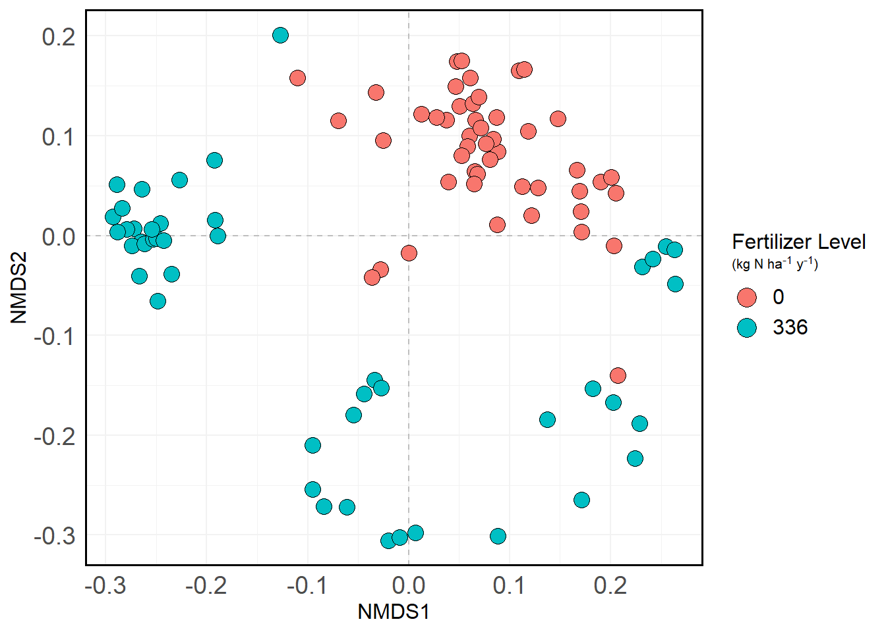
We can also add ellipses to the plot indicate confidence intervals if you’re interested in that:
Adding ellipses
nmds.plot +
stat_ellipse(aes(color = Fert_Level), size = 1, linetype = "dashed", show.legend = FALSE) 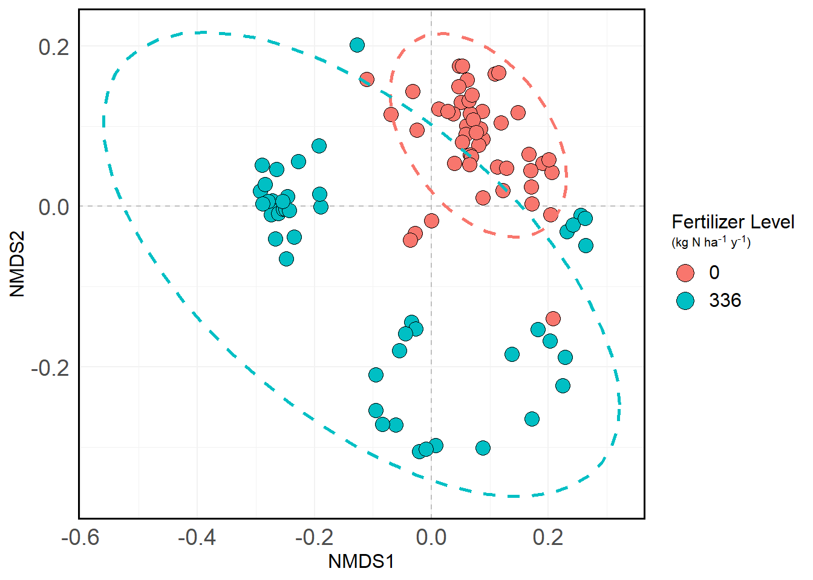
And again with shading:
Adding shading
nmds.plot +
stat_ellipse(aes(color = Fert_Level), size = 1, linetype = "dashed", show.legend = FALSE) +
stat_ellipse(aes(fill = Fert_Level), size = 1, linetype = "dashed", show.legend = FALSE, geom = "polygon", alpha = 0.1) 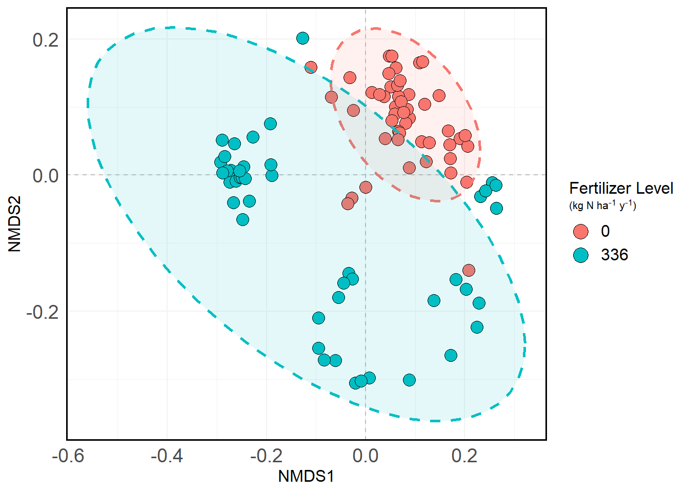
Arrows!
Let’s calculate the loading factors of the individual amoas:
Calculating loadings
dune_dist <- vegdist(data.priming %>% select(starts_with('amoA')))
amoa_anosim <- anosim(dune_dist, data.priming$fert_level)
mds.spp.fit <- envfit(mds.priming, data.priming.reduced %>% select(contains("amoa")), permutations = 999)
spp.scrs <- as.data.frame(scores(mds.spp.fit, display = "vectors"))
spp.scrs <- cbind(spp.scrs, Species = rownames(spp.scrs))
spp.scrs <- cbind(spp.scrs, pval = mds.spp.fit$vectors$pvals)
spp.scores <- as.data.frame(scores(mds.spp.fit, display = "vectors")) %>%
mutate(Species = rownames(.),
pval = mds.spp.fit$vectors$pvals)This is enough to plot arrows on the NMDS. We’ll show the loadings of some amoAs of interest that we identified in a previous analysis.
Plotting arrows
special <- c("amoA.012", "amoA.031", "amoA.035", "amoA.042", "amoA.045", "amoA.070")
special_arrows <- spp.scores %>%
rownames_to_column() %>%
filter(rowname %in% special) %>%
mutate(x = -0.25 * NMDS1,
y = -0.25 * NMDS2,
assay = str_sub(rowname, -2),
assay = paste0("amoA_AOB_p", assay)
)
nmds.plot +
geom_segment(data = special_arrows,
aes(x = 0, xend = -0.3 * NMDS1,
y = 0, yend = -0.3 * NMDS2),
size = 0.66,
arrow = arrow(length = unit(0.25, "cm")),
color = "grey10", lwd = 0.3,
inherit.aes = FALSE) +
ggrepel::geom_text_repel(
data = special_arrows,
aes(x * 1, y * 1, label = assay),
fontface = "bold",
size = 4,
inherit.aes = FALSE,
force = 1,
nudge_x = -0.001
) +
annotate(
"text",
label = paste0("ANOSIM R = ", round(amoa_anosim$statistic, 2),
"\np < 0.001"),
x = 0.4,
y = 0.25,
size = 5,
fontface = 2
) +
stat_ellipse(aes(color = Fert_Level), size = 1, linetype = "dashed", show.legend = FALSE)Warning: Duplicated aesthetics after name standardisation: size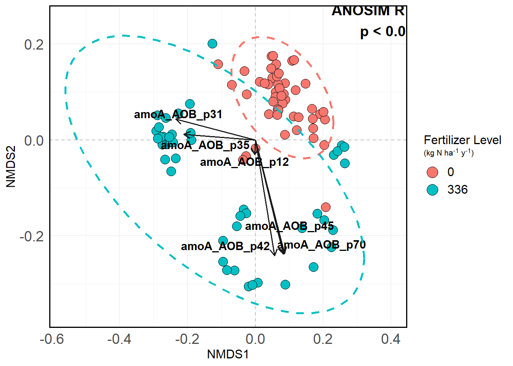
Statistics
Which factors have an impact on overall community composition?
X <- data.priming.reduced %>%
select(-c(contains("amoa")))
Y <- data.priming.reduced %>%
select(c(contains("amoa")))
adonis(Y ~ X$fert_level + X$addition + X$crop + X$timepoint)
Call:
adonis(formula = Y ~ X$fert_level + X$addition + X$crop + X$timepoint)
Permutation: free
Number of permutations: 999
Terms added sequentially (first to last)
Df SumsOfSqs MeanSqs F.Model R2 Pr(>F)
X$fert_level 1 1.4426 1.44255 56.092 0.37093 0.001 ***
X$addition 2 0.0327 0.01633 0.635 0.00840 0.680
X$crop 1 0.0882 0.08823 3.431 0.02269 0.036 *
X$timepoint 1 0.0367 0.03671 1.427 0.00944 0.214
Residuals 89 2.2889 0.02572 0.58855
Total 94 3.8890 1.00000
---
Signif. codes: 0 '***' 0.001 '**' 0.01 '*' 0.05 '.' 0.1 ' ' 1This tells us that fertilization level is very significant and explains ~37% of the variation in our samples. Crop is also a significant factor on community composition, though it only explains 2.3% of the variation.
How do the treatment factors affect the “abundance” of genes on an individual level?
All the code below does is perform an ANOVA of the gene’s abundance against all the terms and all of their interactions.
formulae <- lapply(colnames(data.priming.reduced %>% select(starts_with("amoA"))), function(x) as.formula(paste0(x, " ~ fert_level * crop * timepoint * addition")))
res <- lapply(formulae, function(x) broom::tidy(aov(x, data = data.priming.reduced)))
names(res) <- format(formulae)
names(res) <- str_sub(names(res), end = 8)
anova_results <- lapply(seq_along(res), function(i) res[[i]] %>% mutate(gene = names(res)[[i]])) %>%
bind_rows() %>%
filter(term != "Residuals") %>%
mutate(sig = case_when(
p.value < 0.05 & p.value > 0.01 ~ "*",
p.value < 0.01 & p.value > 0.001 ~ "**",
p.value < 0.001 ~ "***",
TRUE ~ "NS"
))Visualization:
ANOVA visualization
anova_results %>%
mutate(gene = str_sub(gene, -3)) %>%
ggplot(aes(gene, term, fill = sig)) +
geom_tile(color = "black") +
coord_equal() +
labs(y = "",
x = "amoA",
title = "Summary of ANOVA results",
fill = "Significance ") +
theme(
plot.title = element_text(hjust = 0.5),
axis.text.x = element_text(angle = 90, hjust = 0, vjust = 0.5)
) +
scale_fill_viridis_d(option = "magma", direction = -1)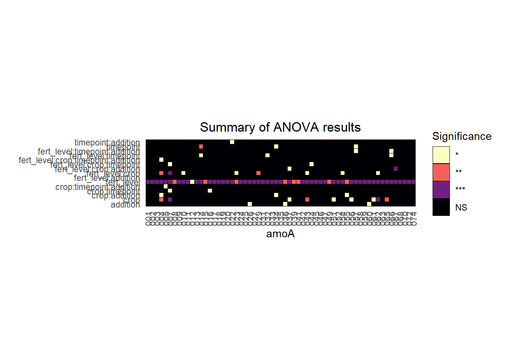
Overall, we see that, again, fertilization level has a significant impact on abundance levels of the individual genes, and it’s not even really that close. There are other factors that might be worth investigating on a gene-by-gene basis, too, but that’s for later.
Biodiversity
Let’s start by visualizing the presence/absence table:
Presence/absence plot
amoA_presence_absence %>%
pivot_longer(cols = starts_with("amoA"), names_to = "amoA", values_to = "presence") %>%
mutate(amoA = str_sub(amoA, -2),
amoA = paste0("amoA_AOB_p", amoA),
presence = as.factor(presence)) %>%
left_join(metadata %>% rownames_to_column(var = "sample_id")) %>%
mutate(strip_label = paste0(fert_level, " kg N ha<sup>-1</sup> y<sup>-1</sup>")) %>%
ggplot(aes(sample_id, amoA, fill = presence)) +
geom_tile(color = "black") +
labs(
x = "Sample name",
y = "Primer pair",
fill = "Species is:",
title = "",
subtitle = ""
) +
scale_fill_viridis_d(labels = c("Absent", "Present"),
begin = 0, end = 1,
option = "magma") +
theme(
axis.text.x = element_text(angle = 90, hjust = 1, vjust = 0.25),
axis.text.y = element_text(size = 7),
plot.title = element_text(hjust = 0.5),
plot.subtitle = element_text(hjust = 0.5),
strip.text = element_markdown(size = 10, face = "bold"),
strip.background = element_rect(size = 1, color = "blaCk", fill = NA),
plot.margin = unit(c(0, 0.1, 0.1, 0.1), "cm")
) +
scale_y_discrete(limits = rev) +
facet_grid(~ strip_label, scales = "free")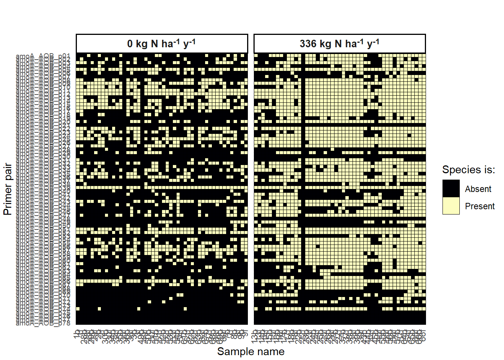
Reading in the best BLAST hit info:
amoA_organism_info <- readxl::read_xlsx("data/amoa_mfp_qpcr_org_accessions.xlsx", sheet = 5) %>%
select(-c(contains(c("forward", "reverse", "notes")))) Counts of best BLAST hits:
amoA_organism_info %>%
count(best_blast_hits, sort = TRUE) # A tibble: 25 x 2
best_blast_hits n
<chr> <int>
1 Nitrosolobus multiformis AmoA (amoA) gene 10
2 Nitrosospira sp. En13 AmoA 9
3 Nitrosospira multiformis ATCC 25196 7
4 Nitrosospira sp. Wyke8 AmoA 7
5 Nitrosospira lacus strain APG3 6
6 Nitrosospira sp. Np39-19 6
7 Nitrosospira sp. Wyke2 4
8 Nitrosospira sp. NpAV 3
9 Nitrosomonas sp. JL21 2
10 Nitrosospira briensis 2
# ... with 15 more rowsCreating a phyloseq object
amoa_tax_table <- amoA_organism_info %>%
select(array_name, best_blast_hits) %>%
column_to_rownames(var = "array_name") %>%
tax_table()
rownames(amoa_tax_table) <- amoA_organism_info$array_nameps <- phyloseq(
otu_table(amoA_presence_absence %>% column_to_rownames(var = "sample_id"), taxa_are_rows = FALSE),
sample_data(metadata),
amoa_tax_table
)Richness analysis
How does observed richness and evenness change with treatment level? This is a modified diversity function that does a bunch of nice stuff that phyloseq::estimate_richness doesn’t do.
Estimate richness function
estimate_richness_mod <- function(physeq, split=TRUE, measures=NULL){
if( !split ){
OTU <- taxa_sums(physeq)
} else if( split ){
OTU <- as(otu_table(physeq), "matrix")
if( taxa_are_rows(physeq) ){ OTU <- t(OTU) }
}
renamevec = c("Observed", "Chao1", "ACE", "Shannon", "Pielou", "Simpson", "InvSimpson", "SimpsonE", "Fisher")
names(renamevec) <- c("S.obs", "S.chao1", "S.ACE", "shannon", "pielou", "simpson", "invsimpson", "simpsone", "fisher")
if( is.null(measures) ){
measures = as.character(renamevec)
}
if( any(measures %in% names(renamevec)) ){
measures[measures %in% names(renamevec)] <- renamevec[names(renamevec) %in% measures]
}
if( !any(measures %in% renamevec) ){
stop("None of the `measures` you provided are supported. Try default `NULL` instead.")
}
outlist = vector("list")
estimRmeas = c("Chao1", "Observed", "ACE")
if( any(estimRmeas %in% measures) ){
outlist <- c(outlist, list(t(data.frame(estimateR(OTU)))))
}
if( "Shannon" %in% measures ){
outlist <- c(outlist, list(shannon = diversity(OTU, index="shannon")))
}
if( "Pielou" %in% measures){
#print("Starting Pielou")
outlist <- c(outlist, list(pielou = diversity(OTU, index = "shannon")/log(estimateR(OTU)["S.obs",])))
}
if( "Simpson" %in% measures ){
outlist <- c(outlist, list(simpson = diversity(OTU, index="simpson")))
}
if( "InvSimpson" %in% measures ){
outlist <- c(outlist, list(invsimpson = diversity(OTU, index="invsimpson")))
}
if( "SimpsonE" %in% measures ){
outlist <- c(outlist, list(simpsone = diversity(OTU, index="invsimpson")/estimateR(OTU)["S.obs",]))
}
if( "Fisher" %in% measures ){
fisher = tryCatch(fisher.alpha(OTU, se=TRUE),
warning=function(w){
warning("phyloseq::estimate_richness: Warning in fisher.alpha(). See `?fisher.fit` or ?`fisher.alpha`. Treat fisher results with caution")
suppressWarnings(fisher.alpha(OTU, se=TRUE)[, c("alpha", "se")])
}
)
if(!is.null(dim(fisher))){
colnames(fisher)[1:2] <- c("Fisher", "se.fisher")
outlist <- c(outlist, list(fisher))
} else {
outlist <- c(outlist, Fisher=list(fisher))
}
}
out = do.call("cbind", outlist)
namechange = intersect(colnames(out), names(renamevec))
colnames(out)[colnames(out) %in% namechange] <- renamevec[namechange]
colkeep = sapply(paste0("(se\\.){0,}", measures), grep, colnames(out), ignore.case=TRUE)
out = out[, sort(unique(unlist(colkeep))), drop=FALSE]
out <- as.data.frame(out)
return(out)
}Calculate richnesses for sample groups
metrics <- c("Observed", "Shannon")
richness <- estimate_richness_mod(ps, measures = metrics) %>%
rownames_to_column(var = "sample_id") %>%
mutate(sample_id = str_sub(sample_id, start = 2))
richness <- left_join(sample_data(ps) %>% data.frame() %>% rownames_to_column(var = "sample_id"), richness) %>%
pivot_longer(cols = Observed:Shannon, names_to = "Metric", values_to = "Value")Joining, by = "sample_id"Statistical tests
Significance test of fertilization level on richness.
(sig_rich_fert <- kruskal.test(Value ~ fert_level, data = richness %>% filter(Metric == "Observed")))
Kruskal-Wallis rank sum test
data: Value by fert_level
Kruskal-Wallis chi-squared = 54.212, df = 1, p-value = 1.8e-13The p-value < 0.001 gives us strong statistical evidence that richness is significantly different between fertilization treatment groups.
Significance test of fertilization level on richness
(sig_even_fert <- kruskal.test(Value ~ fert_level, data = richness %>% filter(Metric == "Shannon")))
Kruskal-Wallis rank sum test
data: Value by fert_level
Kruskal-Wallis chi-squared = 54.268, df = 1, p-value = 1.75e-13The p-value < 0.001 gives us strong statistical evidence that Shannon diversity is significantly different between fertilization treatment groups.
Making nice plots for stat differences
Standard deviations, mean
Generate alpha diversity plots
summaries <- richness %>%
group_by(Metric, fert_level) %>%
summarize(mean_val = mean(Value),
sd_val = sd(Value),
n = n(),
.groups = "drop") %>%
mutate(se = abs((sd_val / sqrt(n)) * qt(0.025, n - 1) )) %>%
mutate(ymax = mean_val + se,
ymin = mean_val - se)
this_annotation <- data.frame(
Metric = c("Observed", "Shannon"),
lab = c("***", "***"),
x = 1.5,
y = c(50 + 5 + 2, 4 + 0.5),
lineheights = c(50 + 5, 4 + 0.25)
)
summaries %>%
ggplot(aes(fert_level, mean_val, fill = fert_level)) +
geom_col(color = "black", size = 1) +
facet_wrap(~ Metric, scales = "free_y") +
theme(
legend.position = "none",
strip.background = element_blank(),
axis.title.y = element_blank(),
strip.placement = "outside",
plot.title = element_text(hjust = 0.5),
strip.text.y = element_text(face = "bold", size = 10),
strip.text = element_text(face = "bold", size = 10),
panel.grid.major.x = element_blank(),
panel.grid.minor.x = element_blank(),
panel.grid.minor.y = element_blank(),
panel.grid.major.y = element_line(color = "gray90", linetype = "dashed"),
axis.ticks = element_blank(),
panel.border = element_rect(color = "black", size = 1, fill = "NA")
) +
scale_y_continuous(expand = expansion(mult = c(0, 0.1))) +
geom_errorbar(aes(ymin = ymin, ymax = ymax, width = 0.5)) +
geom_text(
data = this_annotation,
aes(x = x, y = y, label = lab),
inherit.aes = FALSE,
size = 5
) +
geom_segment(data = this_annotation,
aes(x = 1,
xend = 2,
y = lineheights,
yend = lineheights),
inherit.aes = FALSE) +
labs(
x = "Fertilization Level\n(*** = p < 0.001 by Kruskal Wallis)",
title = "Alpha diversity metrics by fertilization level"
)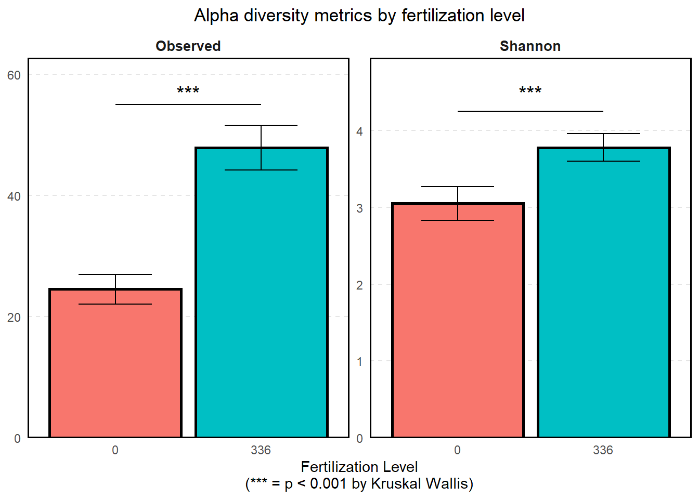
Beta diversity
We’ll start beta diversity analysis off by doing an ADONIS/PERMANOVA to determine if treatment centroids/treatment variations are different between groups.
dis <- vegdist(otu_table(ps))
groups <- sample_data(ps)$fert_level
mod <- betadisper(dis, groups)
anova(mod)Analysis of Variance Table
Response: Distances
Df Sum Sq Mean Sq F value Pr(>F)
Groups 1 0.52595 0.52595 24.589 3.228e-06 ***
Residuals 92 1.96781 0.02139
---
Signif. codes: 0 '***' 0.001 '**' 0.01 '*' 0.05 '.' 0.1 ' ' 1Since p <<<< 0.0001, there is strong evidence that the overall community compositions are significantly different (treatment centroid, distance to centroid, community variation) between the two groups. W can visualize this with a 1 SD ellipse:
plot(mod, ellipse = TRUE, hull = FALSE) 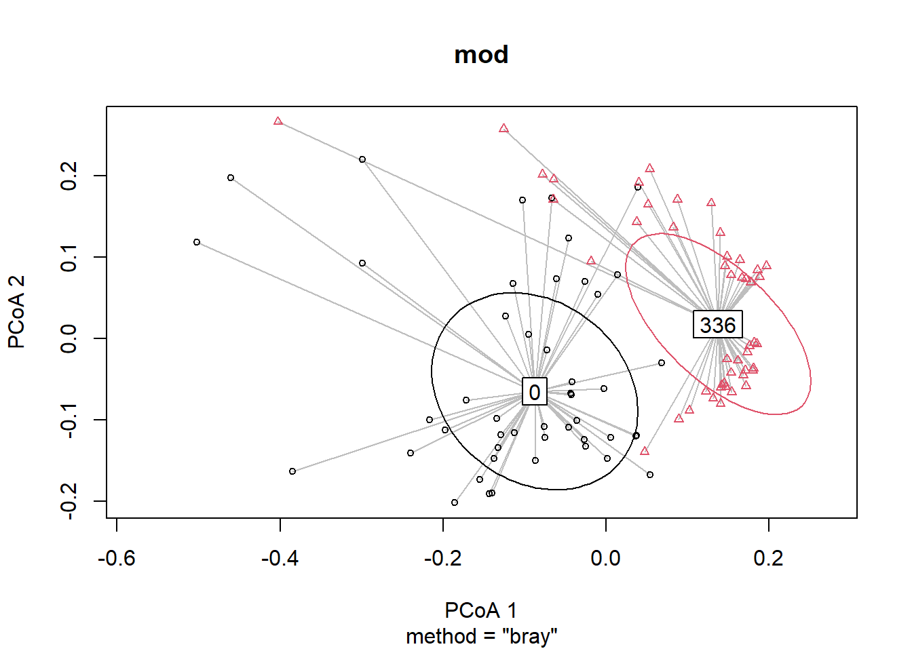
We see that there is clear separation between the two treatment centroids. Let’s do some more analysis on the distance-to-centroids that we’re seeing:
Distance-to-centroid plots
betadistances <- data.frame(
time_frame = mod$group,
distance = mod$distances
)
betadistances %>%
ggplot(aes(time_frame, distance)) +
geom_boxplot(size = 1, outlier.shape = NA) +
geom_jitter(aes(fill = time_frame), size = 5, shape = 21, width = 0.2) +
theme(
legend.position = "none",
panel.grid.minor.x = element_blank(),
panel.grid.major.x = element_blank(),
panel.grid.minor.y = element_blank(),
panel.grid.major.y = element_blank(),
plot.title = element_text(size = 17),
plot.subtitle = element_text(size = 9),
axis.ticks.length = unit(0.25, "cm"),
axis.ticks.x = element_blank(),
axis.text.x = element_text(face = "bold", angle = 0, size = 12),
panel.border = element_rect(color = "black", size = 1, fill = NA),
axis.title.x = element_blank(),
axis.title.y = element_text(size = 14, face = "bold"),
) +
labs(
color = "",
y = "Distance to centroid"
) +
ggsignif::geom_signif(
map_signif_level = TRUE,
comparisons = list(c("0", "336")),
test = "t.test",
step_increase = 0.1,
color = "black",
size = 1,
textsize = 5,
tip_length = 0
)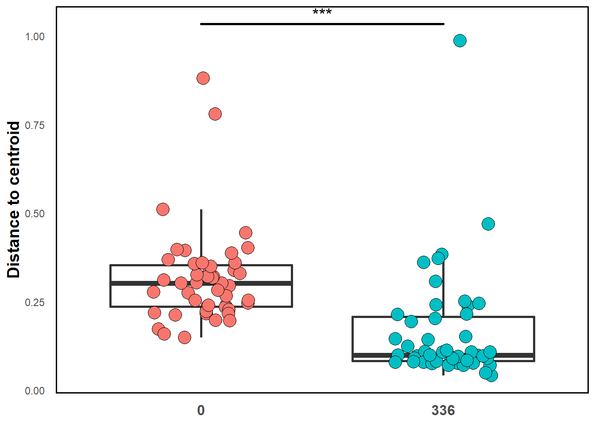
The significance bar is coming from the PERMANOVA test we did above. We see that there is actually less beta diversity (as meaasured by distance-to-centroid) in the fertilized group than in the non- fertilized group. We’ll see another visualization backing this up in the next section:
Composition
Let’s visualize the composition of the communities, separated by fertilization. We’ll start with raw counts - how many times was that best BLAST hit seen in that sample?
comp_barplot(ps, "ta1",
facet_by = "fert_level",
sample_order = "default",
tax_transform_for_plot = "identity") +
coord_flip() +
labs(
title = "Sample composition by fertilization level",
subtitle = "(raw counts)"
) +
theme(
axis.text.x = element_blank(),
axis.text.y = element_text(margin = margin(r = -7)),
plot.title = element_text(hjust = 0.5),
plot.subtitle = element_text(hjust = 0.5, size = 10),
strip.text = element_text(size = 10, face = "bold")
) +
guides(
fill = guide_legend(title = "Best BLAST hit", reverse = TRUE)
)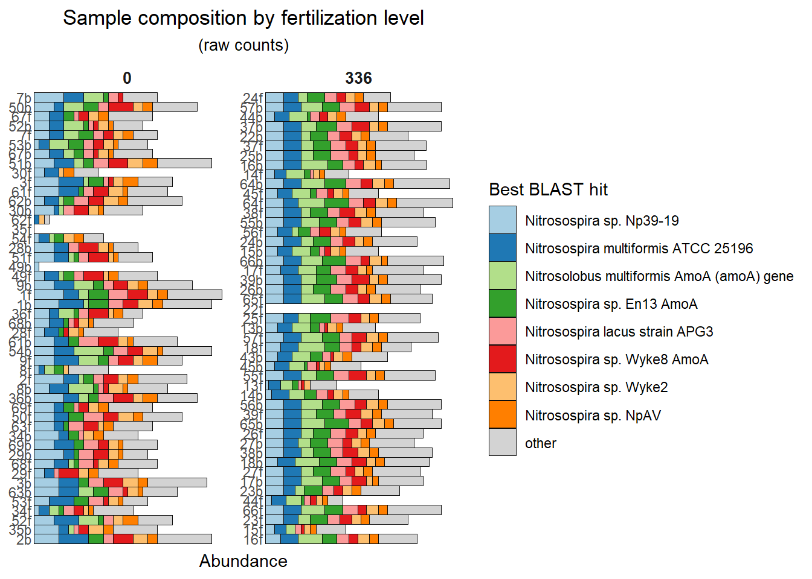
We see that overall the fertilized group appears to have more richness in it.
How about sample composition? IE, relative abundances?
comp_barplot(ps, "ta1",
facet_by = "fert_level",
sample_order = "default") +
coord_flip() +
labs(
title = "Sample composition by fertilization level",
subtitle = "(relative abundance)"
) +
theme(
axis.text.x = element_blank(),
axis.text.y = element_text(margin = margin(r = -7)),
plot.title = element_text(hjust = 0.5),
plot.subtitle = element_text(hjust = 0.5, size = 10),
strip.text = element_text(size = 10, face = "bold")
) +
guides(
fill = guide_legend(title = "Best BLAST hit", reverse = TRUE)
)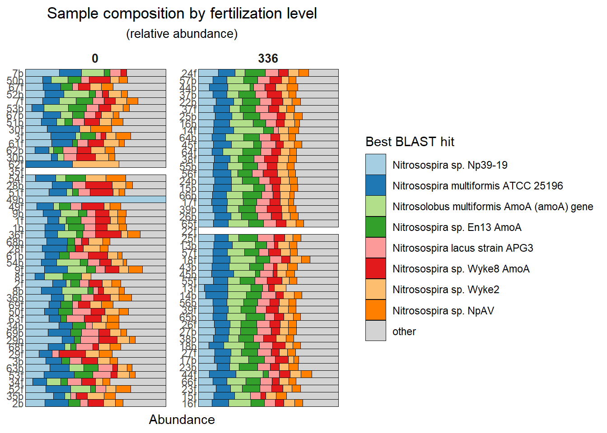
Two big things pop out:
- Species distribution is more even in the fertilized group. This makes sense given previous results showing that Shannon entropy is higher and beta diversity is lower in the fertilized group. You can also see that the communities just look more like each other in the fertilized group, which manifests in shorter distance-to-centroids/lower community variation.
- There’s more green in the fertilized group, suggesting that Nitrosolobus multiformus and Nitrosospira sp. En13 abundances are significantly affected by fertilization addition.
Statistics on a best BLAST hit level
The next chunk is just doing some data transformation stuff to count the number of times each organism was seen in each sample in preparation for the statistical analysis.
pa_count <- ps %>%
otu_table() %>%
data.frame %>%
rownames_to_column(var = "sample_id") %>%
pivot_longer(starts_with("amoA"))
org_table <- tax_table(ps) %>%
data.frame %>%
rownames_to_column(var = "name") %>%
rename(bbh = ta1) %>%
mutate(cleaned_names = janitor::make_clean_names(bbh))
bbh_sample_counts <- left_join(pa_count, org_table, by = "name") %>%
group_by(sample_id, bbh) %>%
summarize(value = sum(value)) %>%
pivot_wider(names_from = "bbh", values_from = value)
bbh_level_counts <- left_join(bbh_sample_counts,
sample_data(ps) %>%
data.frame %>%
rownames_to_column(var = 'sample_id') %>%
right_join(bbh_sample_counts)
) %>%
ungroup()Here, we’re preparing formulas to feed to a lapply function to perform a Kruskal-Wallis test on all of the organisms.
formulae <- lapply(colnames(bbh_sample_counts %>% select(-sample_id) %>% janitor::clean_names()) , function(x) as.formula(paste0(x, " ~ fert_level * crop * timepoint * addition")))
formulae[[1]] <- NULL
res <- lapply(formulae, function(x) broom::tidy(aov(x, data = bbh_level_counts %>% janitor::clean_names())))
names(res) <- format(formulae)
names(res) <- lapply(names(res), function(x) str_split(x, "~")[[1]][1]) %>% unlist()
anova_results.counts <- lapply(seq_along(res), function(i) res[[i]] %>% mutate(gene = names(res)[[i]])) %>%
bind_rows() %>%
filter(term != "Residuals") %>%
mutate(gene = str_trim(gene))Visualizing the results again:
anova_results.counts %>%
left_join(org_table, by = c("gene" ="cleaned_names")) %>%
mutate(sig = case_when(
p.value < 0.05 & p.value > 0.01 ~ "*",
p.value < 0.01 & p.value > 0.001 ~ "**",
p.value < 0.001 ~ "***",
TRUE ~ "NS"
)) %>%
ggplot(aes(term, bbh, fill = sig)) +
geom_tile(color = "black") +
labs(y = "",
x = "",
title = "Summary of ANOVA results",
fill = "Significance ") +
theme(
plot.title = element_text(hjust = 0.5),
axis.text.x = element_text(angle = 90, hjust = 1, vjust = 0.5),
axis.text.y = element_text()
) +
scale_fill_viridis_d(option = "magma", direction = -1) +
scale_y_discrete(limits = rev) +
coord_equal() 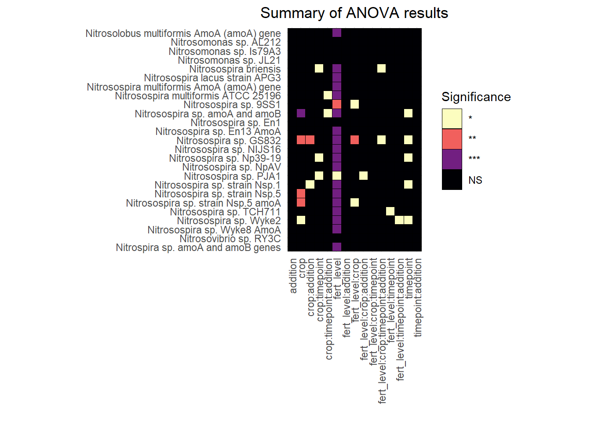
We see the same pattern at the organism level as when we did this at the gene level: fertilization level is by far the most significant factor affecting Presence/Absence of organisms.